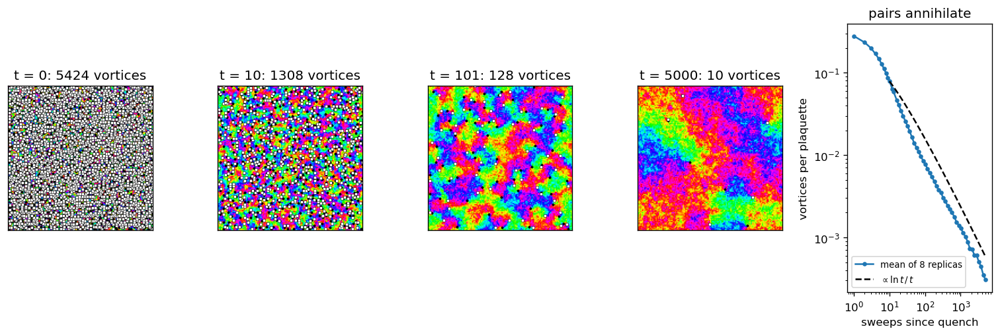
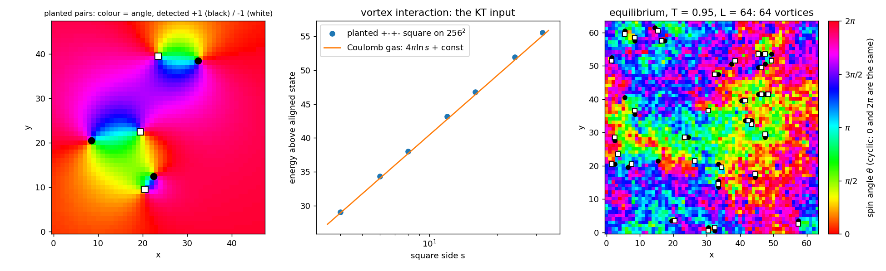

What does a phase transition leave behind?
When the early universe cooled through a symmetry-breaking transition, it left topological defects: domain walls, vortices and cosmic strings. Whether they are harmless, observable or fatal depends on what the transition made and what happened to it afterwards.
Four knobs
One lattice engine, with each knob turned one at a time. Every model gets a defect card with four entries: the freeze-out exponent, the growth law ℓ(t) ∝ tn, the late-time defect density, and a cosmological verdict.
| Knob | Settings | What it controls |
|---|---|---|
| Symmetry | Z₂ (Ising) vs U(1) (XY) | The kind of defect: domain walls, or vortices (strings in 3D) |
| Cooling rate | Quench time τQ, ~30 to 10⁴ sweeps | How many defects form (Kibble–Zurek) |
| Dynamics | Dissipative, conserved, relativistic | How the network coarsens afterwards |
| Background | Flat vs expanding | Whether the network scales with the horizon |
Warm-up: vortices and the Kosterlitz–Thouless transition
Before quenching anything, the engine has to get the equilibrium physics of the 2D XY model right. This model has no ordinary ordered phase. It still has a transition, at TKT ≈ 0.893, driven by vortex–antivortex pairs unbinding. This warm-up is finished.




Coming
The Kibble–Zurek scaling, the conserved-dynamics and expanding-background runs, and the defect atlas: one panel per (symmetry, dynamics) pair at matched coarsening length, with every model's ℓ(t) on one rescaled plot.